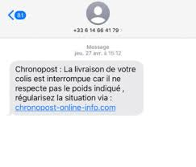
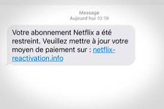
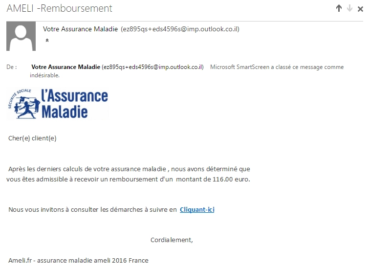
Qui n'a jamais reçu ce type de message ? Le renouvellement d'un compte qu'on n'a parfois même pas ?
Un colis perdu ? Un paiement suspect avec un lien pour bloquer sa carte ? Tous ces messages qui nous paraissent
parfois anodins, voire nous font parfois sourire (qui essaie d'arnaquer quelqu'un sans faire attention si la personne
a effectivement tel ou tel service) sont en réalité la porte d'un type d'arnaque bien particulier visant à dérober des
informations personnelles: le phishing.
Définition
Le phishing est une attaque malveillante qui vise à dérober des informations ou de l'argent à la victime.
L'attaquant envoie un mail/SMS en se faisant passer pour une personne ou un organisme de confiance. Ce type
d'arnaque n'a pas vocation à être personalisée. C'est pourquoi certaines tentatives peuvent paraître parfois ridicules mais c'est une attaque de masse. Par ailleurs, combinée à d'autres pratiques ou à un contexte particulier, elles peuvent se
révéler redoutables.
Témoignages
Quand la fatigue s'en mêle
Une tentative de grande ampleur
Je me suis fait ajouter sur un groupe whatsapp d'environ 80 personnes.
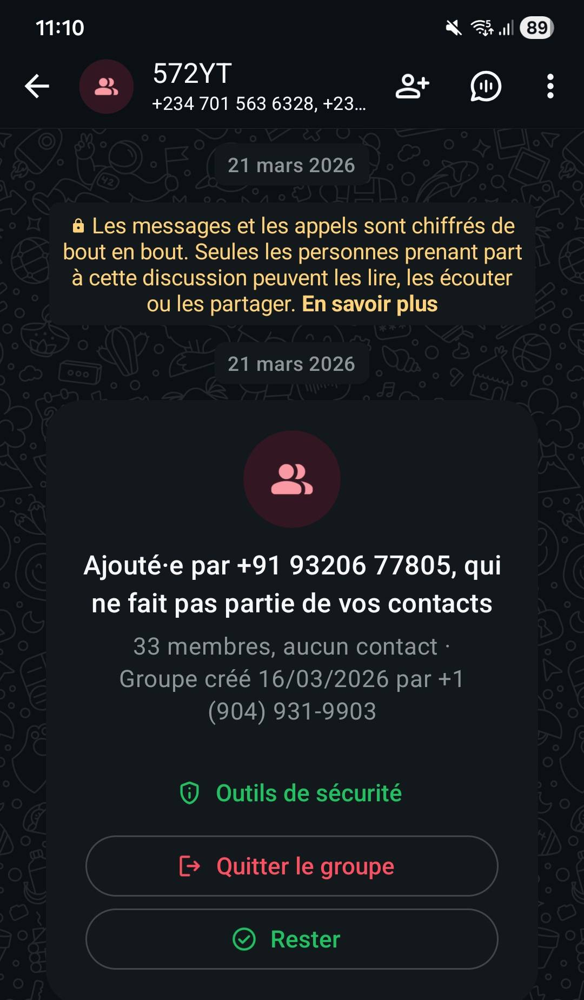
La tâche proposait était simple : s'abonner et liker le contenu de compte instagram. Le paiement
proposé se faisait par Paypal et IBAN.
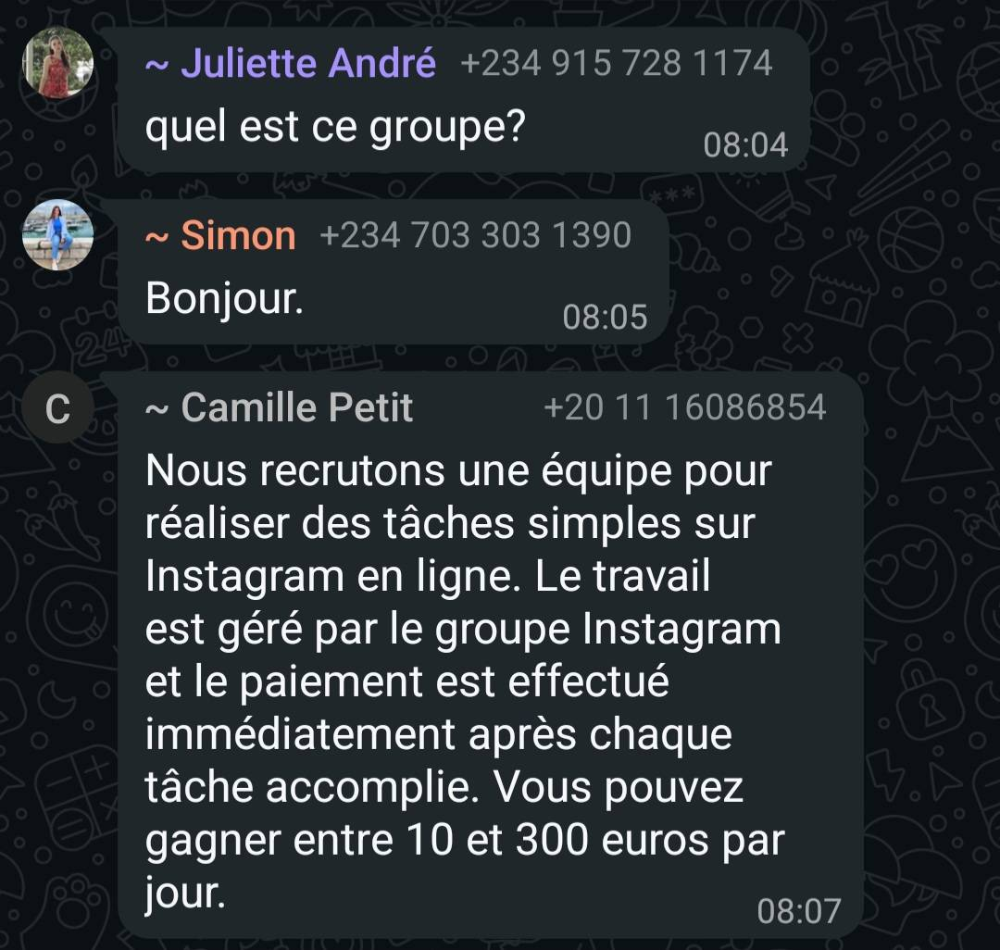
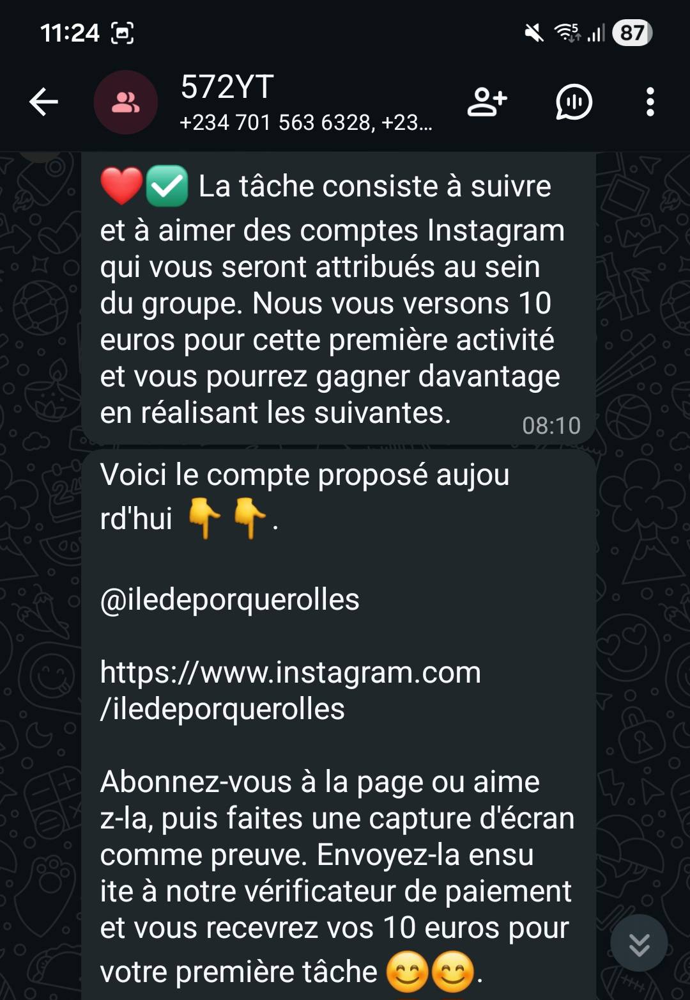
Une discussion s'est mise en place entre quelques personnes, probablement des complices pour mettre
en confiance les potentielles victimes. Reformuler la tâche, montrer des preuves d'un virement...
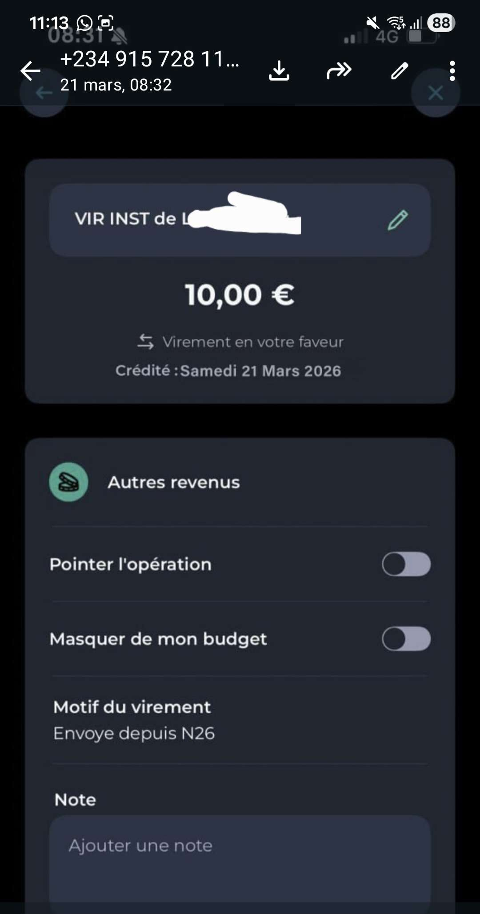
Beaucoup de liens ont circulé, certaines personnes redemandaient régulièrement l'intérêt de ce groupe pour que
les membres du groupe ne passent pas à côté dû à un nombre trop important de messages
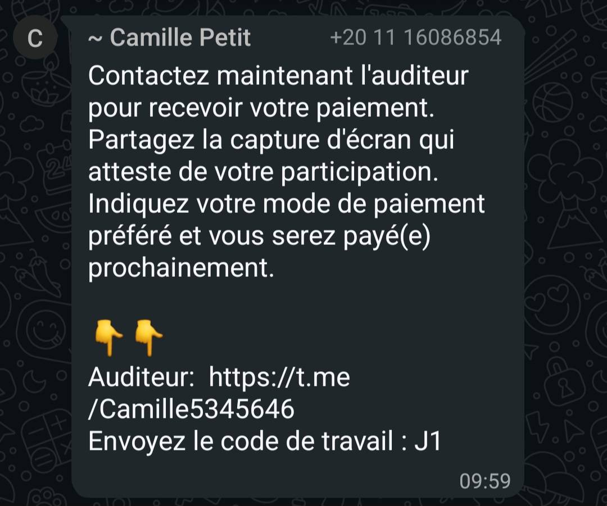
Le groupe est mort de lui-même au bout de 24h, le nombre de membres avaient beaucoup baissé et je suppose que les
arnaqueurs considéraient qu'il n'y aurait pas beaucoup plus de victimes.
Notre enquête
Résultats de la campagne de phishing
Méthode :
Nous avons voulu nous assurer que l'opération de phishing se déroule bien conformément au RGPD et sans inquiéter les services informatques de l'école. Pour ce faire, nous avons d'abord rencontré Laurent Rousset, ingénieur système et réseau à la DSI de Télécom Paris, avec qui nous avons pu discuter des précédentes campagnes effectuées par son département, et de notre projet. Il nous a donné son feu vert pour cette opération, et s'est même montré intéressé par les résultats. Ensuite, nous sommes aller rencontrer Giovanna Dominguez Airola, Juriste en droit public et référente RGPD de Télécom Paris. Elle nous a informé des obligations et des contraintes qu'il fallait que nous respections pour un déroulé correct du projet. Finalement, pour envoyer le mail en accord avec le RGPD, nous avons demandé aux responsables de la liste de diffusion de mail des premières années de Télécom Paris de laisser passer notre mail, après leur avoir expliqué notre projet.
Nous avons donc pu envoyer le mail ci-dessus à l'ensemble de la promotion de 1As de Télécom Paris (environ 250 personnes).
Nous avons choisi comme objet du message une fausse publication d'une note très attendue, avec une mise en page très similaire à celle des mails officiels de publications de notes. Ce choix a été motivé par le constat que la plupart des mails reçus sur Zimbra n'intéressent que très peu et ne sont généralement pas lu, mais ceux qui annoncent l'arrivée d'une nouvelle note sont au contraire très attendus. Malheureusement, nous étions aussi conscients qu'envoyer un mail contnant un lien vers une page dont la destination théorique était très accessible par ailleurs (Synapses) réduirait nos chances.
Le lien en lui-même mène sur une fausse page de connexion Synapses, visuellement identique en tout point à la page réelle. Ce site est hébergé sur les serveurs de Rezel, l'association de réseau de l'école.
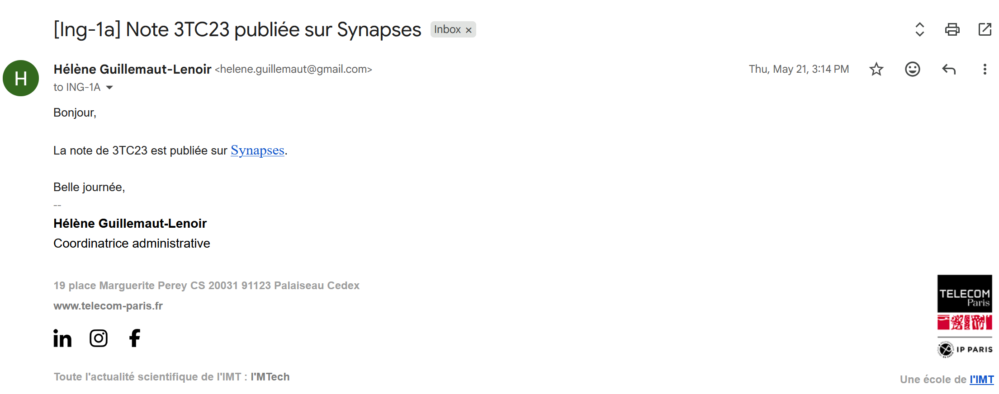
Données Récoltées :
Pour des raisons de protection des données, les seules données que nous avons collectées sont les dates et heures de clics sur le faux lien, ainsi que l'identifiant anonymisé des personnes ayant rentré un identifiant et un mot de passe. Il nous était alors impossible de reconnaître les personnes ayant cliqué et s'étant connectées.
Résultats :
Une courte majorité de la promotion n'a pas cliqué sur le lien, tandis qu'un gros quart a cliqué sur le lien mais n'a rentré aucun identifiant, et enfin un petit quart a rentré des identifiants et a essayé de se connecter. Alors a t-on réussi a piéger plus du cinquième de la promo ? Les étudiants sont-ils vraiment si vulnérables à des attaques de ce genre ? En vérité ces résultats sont à prendre avec des pincettes pour plusieurs raisons. Déjà nous ne pouvons pas vérifier que les identifiants rentrés sont corrects. Certaines entrées ont pu être faites par des plaisantins, et il est possible que certaines personnes aient essayé d'empoisonner nos données en rentrant volontairement plein de fausses informations. Nous n'avons gardé qu'un seul exemplaire de toutes les occurrences d'informations rentrées avec un même identifiant pour supprimer les doublons, mais ne pouvons pas vérifier que chacune des entrées restantes correspondent à des étudiants différents à chaque fois. De plus, pour certains étudiants, il est possible que les champs de connexions se soient remplis tout seuls car le navigateur a pu reconnaître qu'il s'agissait d'un site de Rezel, ce qui n'aurait pas été le cas pour une attaque de phishing classique. Cependant malgré ces limites il apparaît assez clairement que plusieurs personnes se sont laissées convaincre par ce mail. Nous avons eu également 4 étudiants qui ont répondu directement au mail de phishing pour indiquer à la fausse coordinatrice des études qu'ils ne voyaient pas la note.
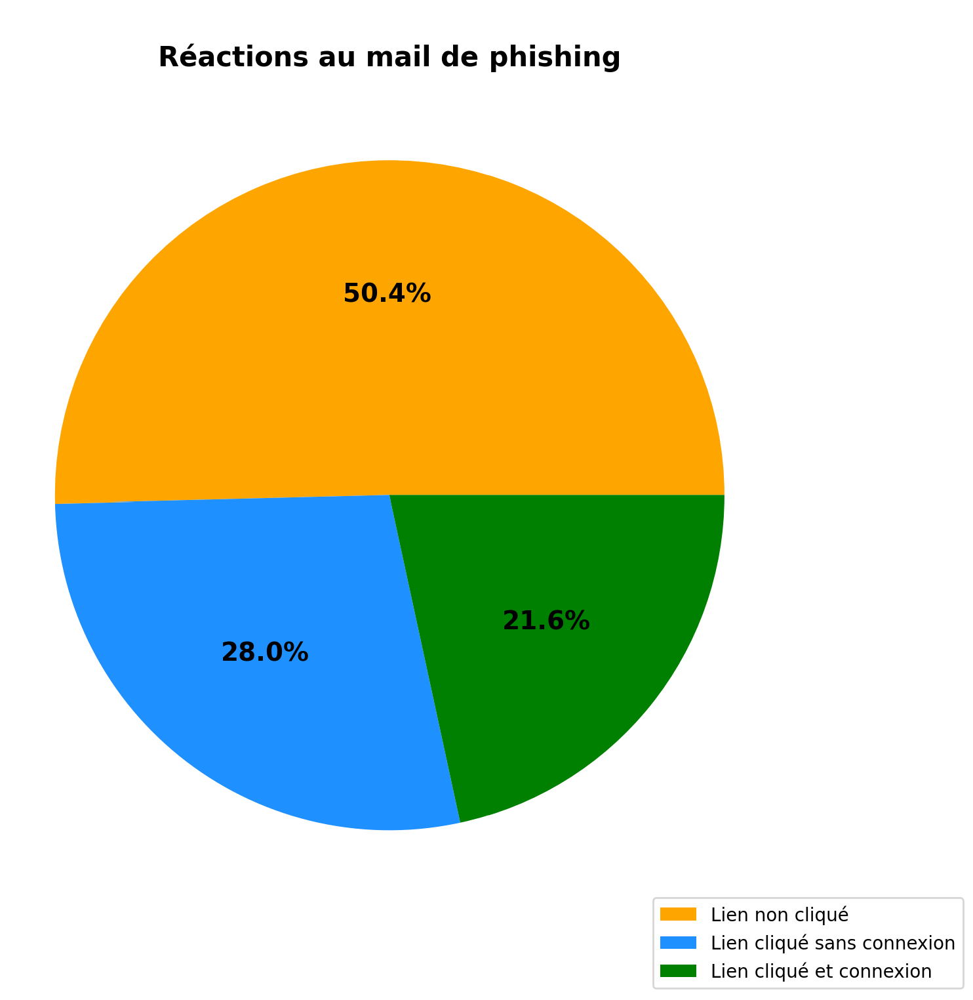
Chronologie des clics sur le lien :
Le mail a été envoyé le jeudi 21 mai 2026 à 15h14. Au total, 134 clics sur le lien ont été relevés. Ils sont majoritairement situés dans les 40 premières minutes après l'envoi du mail, avec un pic de clics 30 minutes après l'envoi du mail.
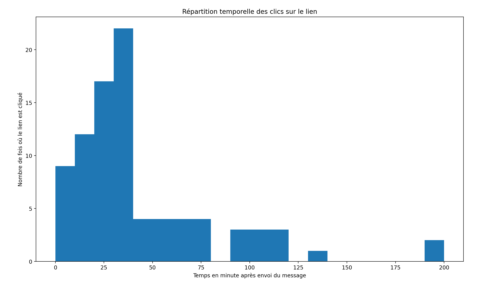
Les discussions sur le groupe Whatsapp de la promotion sont également très intéressantes à relever. 17 minutes après l'envoi du mail, une personne envoie un message demandant si les autres arrivaient à voir leur note. 5 minutes après, quelqu'un fait remarquer que le lien est en rezel.net, ce qui n'est pas normal pour un mail de l'administration. Dans les minutes qui suivent, on fait remarquer d'une part qu'Hélène Guillemaut-Lenoir n'existe pas dans l'administration de Télécom Paris et d'autre part que l'adresse mail est un @gmail.com à la place du @telecom-paris.fr attendu. Les étudiants du groupe en déduisent à juste titre qu'il s'agit de phishing. Au final, en quelques minutes seulement, l'ensemble de la promotion est prévenue du piège par Whatsapp, ce qui a certainement limité le nombre d'étudiants ayant rentré ses identifiants de connexion. Cette réaction rapide est encourageante de ce qui se passerait en cas de vraie attaque par mail.
DO/DON'T
DO
- Vérifiez l'adresse de tout site, par exemple en utilisant SSL Trust
- Utilisez des mots de passe différents et complexes pour chaque site et application
- Si possible, activez la double authentification pour sécuriser vos accès
- Vérifiez l'orthographe des mails
- Signalez tout mail suspect sur la plateforme du gouvernement
DON'T
- Ne cliquez jamais sur un lien suspect (voir critèes ci-dessus)
- Ne communiquez jamais d'informations sensibles par messagerie ou téléphone
- Ne pas faire aveuglément confiance à des inconnus